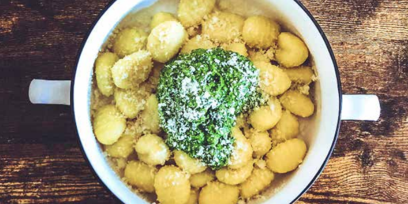

Gnocchi with homemade pesto

Description
Gnocchi is a type of Italian pasta. In Italy the term gnocchi refer to a fairly large number of pasta varieties, although the most frequent are those made from potato. The gnocchi go way back to Roman times. They were made from semolina dough, mixed with eggs. Roman legions spread the dish throughout the the European region where they have conquered and it became a peasant delicacy as the gnocchi was inexpensive, easy to prepare.
Recipe originally created by Let's Cook.
Ingredients
- Gnocchi
- Basil
- Garlic
- Kale
- Spinach
- Nutritional yeast
- Cashew nuts
- Parmesan cheese
- Lemon
Step by step instructions
- The vegetables:
Cut lemon in half and squeeze the juice.
Separate basil leaves from its stems. Discard the stems.
Peel garlic and cut in half.
- The pesto:
In a bowl, put basil leaves, garlic, kale, cashews, lemon juice, spinach, nutritional yeast and 3 tablespoons of olive oil for each lemon in the kit.
Blend with a hand blender until you get a paste.
Season with salt and pepper and stir well
- The gnocchi:
Place water with a pinch of salt in a pot and bring to a boil. Add gnocchi and cook until they start to float, 3min approx.
Drain and add a drizzle of olive oil. Stir.
- Your meal:
Place gnocchi on a plate.
Finish with pesto and Parmesan sprinkled on top.
Go to homepage